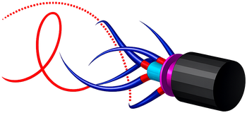

A smooth measure
DCOL++ returns a single number, α, that changes smoothly as shapes move. There are no sudden jumps for an optimizer to trip over.

GVS RoboticsC++17 · Eigen · Differentiable contact
Collision detection that tells an optimizer which way to move.
DCOL++ uses one smooth number to measure how close two shapes are. It also computes exactly how that number changes as the shapes move, with hand-derived formulas: no approximations and no guessing. That makes it a natural fit for motion planners, simulators, and learning systems that improve by following slopes.
A fast C++ re-implementation and extension of DifferentiableCollisions.jl (Tracy et al.), with ideas from our iDCOL project. MIT licensed.
A yes-or-no collision check tells a robot that it hit something, but not how to fix it. Modern planners and learning systems improve a motion step by step. At every step they need a smooth measure of closeness and its slope: which small change makes things better, and by how much.
DCOL++ returns a single number, α, that changes smoothly as shapes move. There are no sudden jumps for an optimizer to trip over.
It also returns how α, the contact point, and the contact direction change for any small rotation or shift. These come from exact formulas, not trial and error.
A full query with derivatives takes a few millionths of a second per pair, so it fits inside simulators and optimization loops.
Imagine inflating or deflating both shapes by the same factor, each around its own center, until they just touch. That factor is α (alpha). Try to find it yourself with the slider.
One number covers every case. α > 1: the shapes are apart, and must grow to meet. α = 1: they are exactly touching. α < 1: they overlap, and must shrink to come apart. The point where the scaled shapes meet is the witness point, i.e. where the contact happens.
Why scaling? Finding α is a convex optimization problem (technically a second-order cone program) of fixed, small size. It can be solved reliably in a few iterations, and its solution can be differentiated exactly.
Because α changes smoothly, its slope always points somewhere useful: the arrow shows which way to move B to increase α fastest. An optimizer follows such slopes to reach a goal, here making the shapes sit at a chosen α.
The optimizer only sees α and its slope, never the shapes. It usually reaches the target within a few steps. The plot shows why: α is a smooth curve, so slopes point the right way. In this toy demo the slope is measured numerically. DCOL++ computes the full set of slopes (for rotations too, and for the contact point and direction) analytically, straight from the solver's own equations.
The playground runs the actual DCOL++ C++ code in your browser, compiled to WebAssembly. Pose two 3D shapes, solve, and watch the exact derivatives predict the contact as the pose wobbles.
Eight 3D shapes, six-degree-of-freedom posing, the α-scaled overlay, and a live derivative check. Downloads about 4 MB.
Every shape is convex (no dents or holes). Combine them to model more complex robots and objects.
✦ new in DCOL++, not in the original Julia library.
Our COAL fork measures the true geometric distance between almost any shapes, including meshes, height fields, and octrees. DCOL++ instead measures the scale factor α for a set of convex primitives. α is smooth and exactly differentiable to second order, which makes it especially convenient inside optimizers. Use COAL when you need the exact gap on complex geometry. Use DCOL++ when gradients matter most.
Beyond first slopes, DCOL++ differentiates a second time. That is what makes the derivative of the contact direction exact.
Detects when contact is a line or a face rather than a point, and returns several contact points, each with its own derivatives.
Optional bounding boxes and a bounding-volume tree quickly skip pairs that are far apart, so scenes with hundreds of bodies stay fast.
It's a scale factor. To get a distance-like number, use the returned gap.
At an exact edge or corner contact, the slope depends on which side you approach from. DCOL++ returns a valid one-sided slope and flags the case.
The equations get numerically stiff as shapes touch. The contact-point slopes lose some digits, gracefully. α's own slope is unaffected.
Convex shapes only, and APIs may still change. Non-convex objects need to be split into convex pieces.
Eigen 3.4 is the only dependency. Pull DCOL++ into a CMake project and link one target:
include(FetchContent)
FetchContent_Declare(dcolpp
GIT_REPOSITORY https://github.com/GVSRobotics/DCOLpp.git
GIT_TAG main)
FetchContent_MakeAvailable(dcolpp)
target_link_libraries(your_target PRIVATE dcolpp_socp)#include "dcolpp/socp/contact.hpp"
using namespace dcolpp::socp;
Eigen::Matrix<double, 6, 3> A; // unit cube as six half-spaces
A << 1,0,0, -1,0,0, 0,1,0, 0,-1,0, 0,0,1, 0,0,-1;
Polytope<6> cube(A, Eigen::Matrix<double, 6, 1>::Constant(0.5));
Cone cone(1.5, 0.4363); // height 1.5, half-angle ~25°
Eigen::Matrix4d g = Eigen::Matrix4d::Identity(); // pose of the cone relative to the cube
g(2, 3) = 1.2;
auto r = proximityContactJacobian(cube, cone, g);
// r.alpha <1 hit, =1 touch, >1 apart
// r.normal, r.gap contact direction and signed gap
// r.jacobian d[witness; alpha] / d(pose), 4x6
// r.normal_jacobian d(normal) / d(pose), 3x6DCOL++ builds on two papers. Please cite them if it helps your work:
@article{tracy2023differentiable,
title = {Differentiable Collision Detection for a Set of Convex Primitives},
author = {Tracy, Kevin and Howell, Taylor A. and Manchester, Zachary},
journal = {IEEE International Conference on Robotics and Automation (ICRA)},
year = {2023}
}
@article{mathew2026idcol,
title = {Collision Detection with Analytical Derivatives of Contact Kinematics},
author = {Mathew, Anup Teejo and Peringal, Anees and Caradonna, Daniele
and Boyer, Frederic and Renda, Federico},
journal = {IEEE Robotics and Automation Letters (RA-L)},
year = {2026}
}